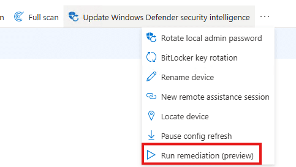
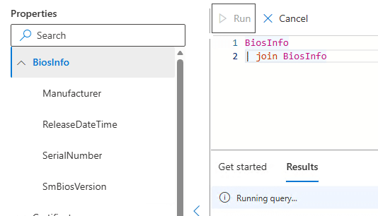
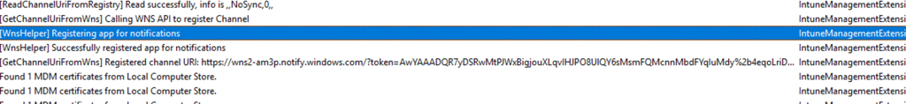
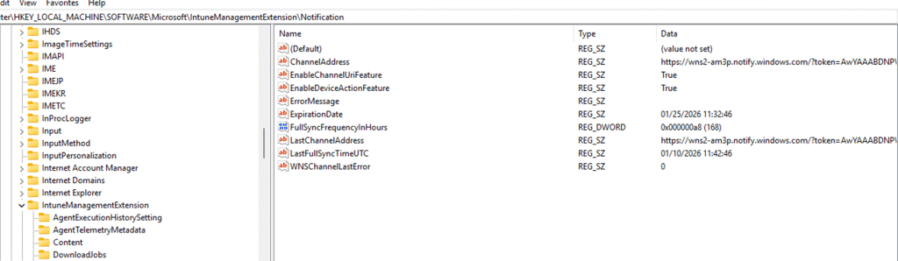
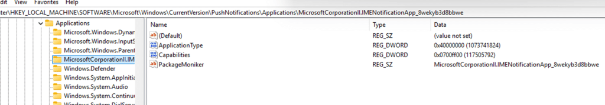
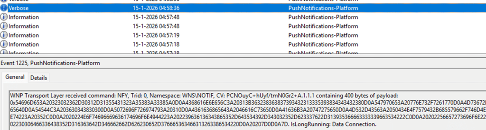
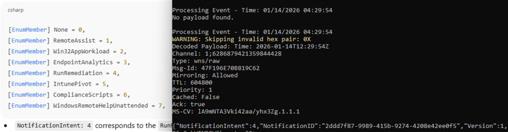
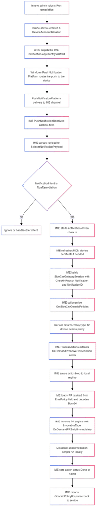
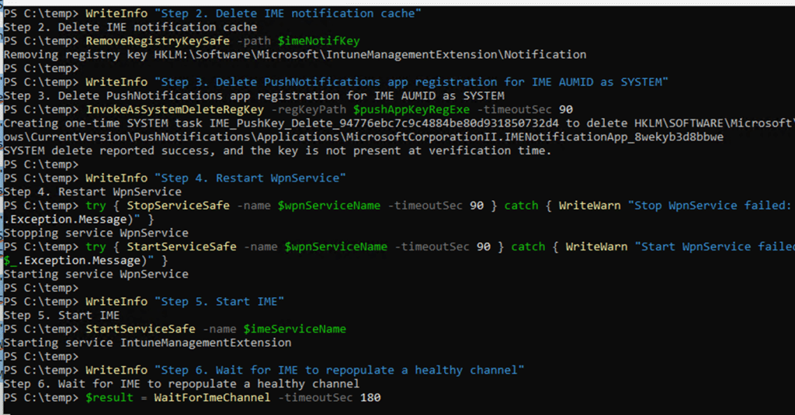
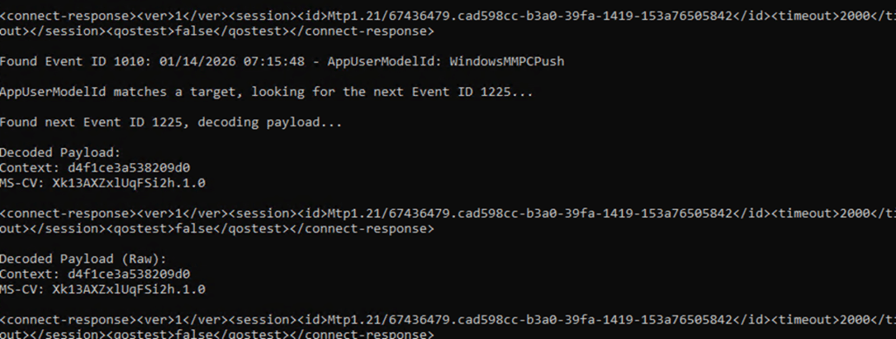

Everything that depends on instant device actions (such as remediations) in Intune relies on Windows Push Notifications, and that is where troubleshooting goes blind. The Windows Notification Services (WNS) gives you no delivery status, no failure signal, and no way to see whether a push ever reached the device. Intune reports the action as sent, the Intune Management Extension (IME) looks healthy, but nothing happens.
Read the blog to learn how to determine whether the push arrived, where to check on the device, and how to troubleshoot without reinstalling the IME.
Introduction
It all started with something that should have been pretty instant. I triggered an on-demand remediation from Intune.


Which is a remote action to the device, without waiting for weird IME schedules or the Intune Management Extension to wake up on its own. But somehow nothing happened. At first, it felt like a one-off. Maybe the remediation itself was broken. But after retrying it a couple of times, it became pretty clear. Every device action that depends on the IME reacting instantly behaves the same way… With it, Device Query was also stuck in progress.


That was the moment it stopped being only a remediation problem.
Fixing the Push Notifications Option 1
This behavior was familiar. I had seen it before. Uninstalling and reinstalling the Intune Management Extension fixed everything instantly. After the IME got reinstalled, on-demand remediations started working again as if nothing had ever happened. That workaround still worked here.
But reinstalling the IME is not the solution we want. It is a reset button. The real question was why that reset worked and what exactly got fixed when you do it.
The IME itself does not discover on-demand remediations by polling. These actions are delivered via Windows push notifications. To receive those notifications, IME registers itself with the Windows Push Notification platform under a specific application identity: the IME notification AUMID.


From Windows’ perspective, this looks like an app registering for push, even though IME is a service. That registration has two distinct steps. First, IME ensures the local application registration exists. This lives under the PushNotifications Applications registry hive. If the key is missing or incomplete, IME recreates it.


Second, the IME creates the IMENotificationApp folder and asks Windows to create a push channel by calling the WinRT API CreatePushNotificationChannelForApplicationAsync.



Windows responds with a channel URI and an expiration time. That URI is the callback address.

Intune sends the notification (through WNS) to that address, Windows receives it, and Windows calls back into the IME when a message arrives. If that callback chain is broken, the IME never wakes up. No remediation runs, no error is shown, and retries from the Intune portal change nothing.
Proving whether the push notifications arrived at all
At that point, guessing if the push arrived was no longer useful. There is no status in Intune that tells you whether a push was actually delivered to the device, and IME does not expose that information either….the WNS is just 1 big black box. So we stopped relying on the portal and built our own way to observe push delivery on the device.

Under normal circumstances, this part of the story is boring. On a healthy device, Windows makes push delivery visible if you know where to look. Every push routed to the Intune Management Extension appears in the PushNotification Platform operational log. You see Event ID 1010 for the IME notification AUMID, followed almost immediately by Event ID 1225 containing the raw payload.


We can easily decode the payload to see the notification intent and ID.

That is what a working system looks like. A clean and predictable sequence. The push message is routed, the payload is delivered, and the IME is woken up. On the affected device, none of that happened. When we triggered an on-demand remediation, the Push Platform event log stayed completely silent. No Event ID 1010 for the IME AUMID. No Event ID 1225. Nothing to decode. From Windows’ perspective, no notification was ever delivered. That absence changed the entire investigation.
From the Intune side, the action was marked as sent. From the IME side, nothing appeared obviously broken. But the push message never crossed the Windows boundary. The IME was never woken up because the WNS never routed the notification to that specific device. AKA the Push Notification was lost in cyberspace. Before zooming in on how we fixed it without reinstalling the IME, let’s zoom in on the remediation itself… when it’s working.
A Run Remediation push does NOT contain the remediation logic itself. It is just a signal. When the IME receives that notification, it enters the device action callback path. The payload is parsed, the intent is identified as RunRemediation, and IME starts a notification-driven check-in


Please Note: Win32AppWorkload Notification…. wondering what that is going to do
This is different from a scheduled cycle. It is explicitly marked as notification-based and immediately requests the device action policy tied to that NotificationID. Only then does IME download the remediation payload, store it locally, and invoke the proactive remediation engine in on-demand mode.
All of that happens after the push. If the callback never fires, the IME never even starts this remediation flow. If the callback fires but the follow-up communication fails, the remediation still never runs. From the portal, both cases look identical.
The same flow as discussed above, but now in total… also with the IME action in it


Fixing the Push Notifications with our PowerShell script
Once it was clear that the IME push notification with the notificationintent never arrived, it became clear what we needed to do. Re-registering the IME Notification app… because something during the uninstall and reinstall of the IME also forced the IME to reregister it. So why can’t we do it ourselves? Besides that I thought it was funny….
We already know that the IME maintains its own notification cache, but that cache is only part of the chain. The more important piece is the Windows Push Notification platform registration for the IME notification AUMID. That registration is owned by the operating system. Even when running as an administrator, you cannot reliably remove or repair it. Windows may block the deletion or recreate the key immediately in the background. So we created a PowerShell script to mimic the same steps


The IME service was stopped first, so it could not interfere. Its local notification cache was cleared to remove any stale channel data. The PushNotifications application registration for the IME AUMID was then removed by executing the deletion as SYSTEM, not as an administrator. That distinction matters. Only SYSTEM can reliably remove the registration long enough for the platform to rebuild it.
After that, the Windows Push Notification service was restarted to flush any cached platform state. From that point, the normal registration flow ran cleanly.

Create Push Notification Channel
After executing the script, the IME recreated the application registration, and the IME called CreatePushNotificationChannelForApplicationAsync. From there on, Windows issued a fresh channel URI and expiration. Immediately after that, push notifications started working again. The PushNotification Platform log began showing EventID 1010 and 1225 for the IME notification AUMID, and on-demand remediation triggered exactly like it did on a healthy device.


The end result was identical to reinstalling IME. The difference was understanding why it worked and fixing the actual failure instead of resetting everything around it.
Why reinstalling IME “fixes” the Push Channel
The key detail turned out to be where the broken state lived. It was not only inside IME’s own notification cache. It was inside the Windows Push Notification platform’s protected application registration for the IME AUMID. That registry key is owned by the operating system. Even as an administrator, you cannot reliably delete it. Reinstalling IME works because it indirectly forces Windows to tear down and rebuild the push notification app registration. But … yeah, don’t do this in prod.
WNS as a black box, and why IC3 might replace it
Windows push notifications are opaque by design. Once Intune hands a message to WNS, visibility largely disappears. If the notification is routed correctly, you might see it in the PushNotification Platform log. If it is not, there is no retry signal, no failure surface, and no way to tell where it vanished. In practice, WNS is a black box… and it has a nice throttling mechanism. The best thing? You don’t have any visibility!

That is exactly what we ran into here. Intune marked the action as sent. IME looked healthy. But the push itself never reached the device. Somewhere between the service and the callback, it simply stopped existing. This is where IC3 becomes interesting, even though it is not fully there yet.

IC3 is Coming?
If you look at how newer IME flows are evolving, IC3 appears to be positioning itself as more than just another transport layer. Instead of relying on Windows push notifications as the primary wake-up mechanism, IC3 provides a direct, stateful communication path between Intune and the IME. One that is observable, traceable, and far less dependent on OS-level push plumbing. In the current model, WNS is still the trigger. If WNS breaks, the IME never wakes up. That single dependency is the weak link. The behavior we saw here is a perfect example of that. Everything above WNS was fine. Everything below it was never reached.
What IC3 seems to aim to do is remove that WNS fragility. Rather than notifications vanishing into an OS owned subsystem with no feedback, IC3 shifts device actions into a protocol that IME already uses for other workloads. One where connections are explicit, retries exist, and failures show up as real errors instead of silence. Today, that transition is incomplete. WNS is still part of the picture, and when it breaks, everything built on top of it still collapses. But the direction is clear. IC3 is not just another channel. It looks like a deliberate move away from WNS as the critical dependency for instant device actions.
If and when that shift completes, issues like this should become far easier to reason about. Not because failures stop happening, but because they stop disappearing. And after chasing a remediation that never arrived, that alone would be a massive improvement.
The real takeaway
On-demand remediation was never the root problem. It was simply the first feature to expose a broken push callback chain. IME depends on a Windows push notification callback created through CreatePushNotificationChannelForApplicationAsync. When that callback registration is corrupted, IME never wakes up, and every instant device action silently stops working. Reinstalling IME fixes it by coincidence. Resetting the push registration fixes it by design.